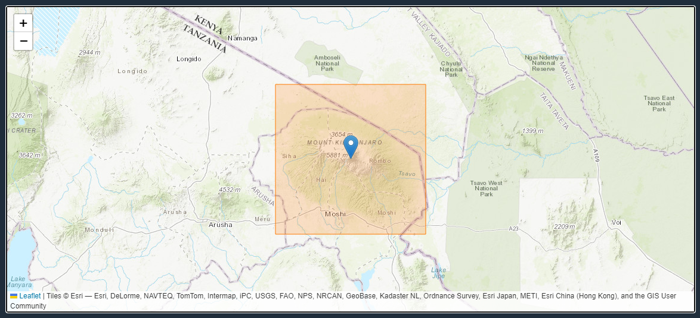
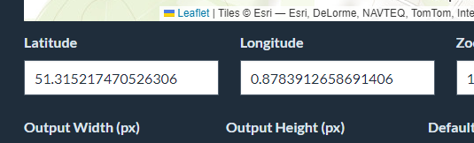
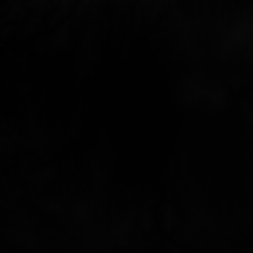
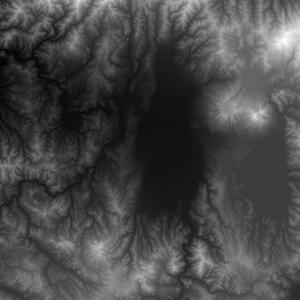
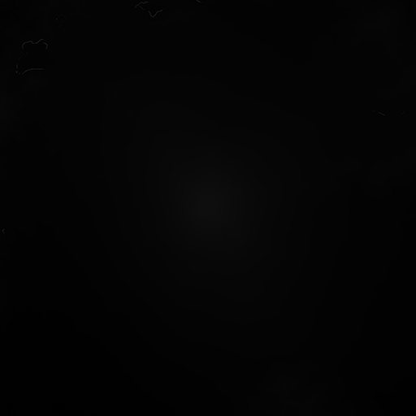
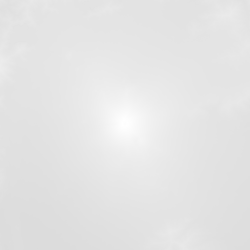
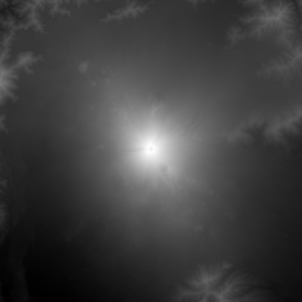
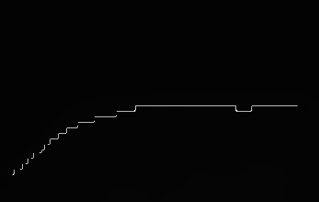
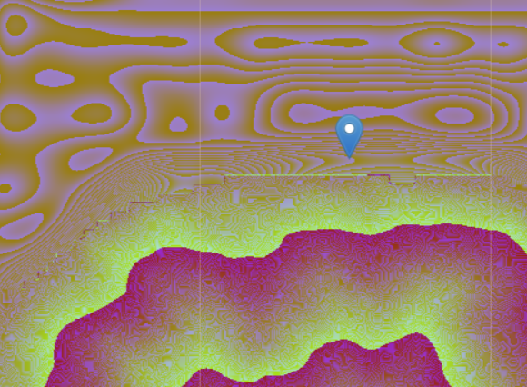

This tool turns real-world elevation data into heightmaps for Unreal Engine, Godot, Terrain3D, Blender, Unity and 3D printing. It runs entirely in your browser, with nothing to install or sign up for.
You can export:
Heightmaps as 16-bit PNG, or 16- or 32-bit OpenEXR, either as one file or tiled
Texture maps that line up with the heightmap: normal, slope, curvature, height bands and water mask
Albedo (colour) images from satellite, topographic and other map styles
3D models as STL, OBJ or GLB, with a 3D preview before you download
Quick start
Find your area. Type a place name in the search box, drag the map, or paste coordinates.
Choose the elevation data. Mapterhorn is the most detailed in most places. See Elevation data.
Set the output zoom and size. The orange rectangle on the map shows exactly what will be exported.
Choose a format. For Unreal, use PNG 16-bit with Smart normalisation (the defaults).
Click Generate Heightmap. Your file downloads when it's ready. Any extra maps you ticked download with it.

The orange rectangle shows the area that will be exported.
Finding a place and sharing links
Search
Type a mountain, valley, lake or town into Search for a place and pick a result with the mouse or the arrow keys and Enter. The map moves there. You can also type coordinates into the search box.
Coordinates

Latitude and longitude inputs
Latitude and longitude set the centre of the export. You can type them in, or paste a coordinate string onto the page and the map jumps there. These formats all work:
03°04′33″S 37°21′12″E
3.0674° S, 37.3556° E
-3.0674, 37.3556
Shareable links
The page address always holds your current location and settings, for example:
Bookmark it to come back to the exact same export, or use Copy share link to send it to someone. Settings left at their defaults are left out of the link to keep it short. Old links in the #latitude/…/longitude/… format still work.
Elevation data
Use the Elevation Data setting to choose where the heights come from.
Source
Coverage and detail
Max output zoom
AWS Terrain Tiles (Mapzen)
Worldwide. Mostly 30 to 90 m, with 3 to 10 m in the USA. This was the original data source for the tool. It has some known errors, see FAQs.
15
Mapterhorn
Copernicus GLO-30 (30 m) worldwide, plus 0.25 to 10 m lidar for the USA (USGS 3DEP), the UK, most of Europe, Japan, New Zealand and more. See mapterhorn.com for coverage.
18
Upscaling. Where Mapterhorn only has 30 m data, higher output zooms are smoothly upscaled from it. After each export, a line under the result tells you how detailed the source data really was (in metres per pixel), and whether any of it was upscaled.
Surface model. Copernicus measures the top of whatever is there, so dense forests and large buildings can show up as bumps. The lidar areas show bare ground.
Data credits and licences are on the License Info page.
Output zoom and size
Two settings decide how much ground the export covers:
Output Zoom sets how much ground each pixel covers. Each step up halves the metres per pixel and doubles the detail.
Output Width / Height (px) set how many pixels there are.
Area covered = pixels × metres per pixel. The orange rectangle on the map updates as you change either setting.
Output zoom
Metres per pixel at the equator
A 2017 px export covers
10
153 m
308 km
12
38 m
77 km
13
19 m
39 km
14
9.6 m
19 km
15
4.8 m
9.6 km
16
2.4 m
4.8 km
17
1.2 m
2.4 km
18
0.6 m
1.2 km
Away from the equator, multiply by cos(latitude). For example, at 46° (the Alps) each pixel covers about 70% of the ground shown in the table.
Default Sizes lists Unreal Engine's recommended landscape sizes (such as 1009, 2017, 4033 and 8129) and powers of two (such as 1024 and 4096) for Godot, Terrain3D and others. A single export can be up to 8129 × 8129. For anything bigger, use tiled exports.
Choosing a zoom. There's no benefit to an output zoom much higher than the source data supports. Do a small test export first and read the source-detail line under the result. For 30 m data, zoom 12 to 13 is about the limit. For 1 m lidar, zoom 16 to 17 is worthwhile.
Output formats
Format
Levels of detail
Best for
PNG 16-bit
65,536
Unreal Engine landscapes, and most other software
OpenEXR 16-bit
Half-float, about 2,000 steps near the top of the range
Previews only. It's coarser than the PNG.
OpenEXR 32-bit
Full float
Blender, Godot (Terrain3D, HTerrain), Houdini and Gaea. With normalisation Off it stores true metres, including below sea level. Otherwise it stores 0.0 to 1.0.
16 bits gives 65,536 height levels. That's enough to cover sea level to the top of Everest (8,849 m) in steps of about 13 cm, and with normalisation (see below) a 1,000 m mountain gets 1.5 cm steps. An 8-bit image only has 256 levels, which gives visible terracing.
Tiled exports
Use Tiled Export to split one big area into several files, for example for Unreal World Partition, or to get past the single-image size limit.
Tile by size: set the width and height of each tile in pixels.
Tile by count: set how many tiles across and down.
Zip Exports? bundles all the tiles (and their extra maps and georeferencing files) into one zip, instead of many separate downloads.
Pad tile exports makes the edge tiles the same size as the others, filling the extra space with blank pixels. Without it, edge tiles are cropped to whatever is left over.
Unreal 5.7+ naming names tiles _x00_y00, _x01_y00, and so on, which Unreal's tiled landscape import picks up automatically. Otherwise tiles are named _tile_ROW_COL.
All tiles share one height scale, so heights match across the seams.
Very large areas. With Regular or Smart normalisation, the whole area is generated in memory first and then cut into tiles. If you set normalisation to Off, or enter your own Norm From and Norm To, tiles are generated one at a time instead. That uses far less memory and is the way to go for huge exports.
Normalisation
Normalisation stretches the heights in your area to fill the full range of the file, so you get the most detail out of 16 bits.
Off
No normalisation. The pixel value is the height in metres, and anything below 0 becomes 0. In a 16-bit PNG, heights are stored in whole metres (1 m steps), and anything below 0 becomes 0. In a 32-bit EXR they're stored as exact metres, including below sea level, which is the easiest way to get true heights into Blender, Godot or Houdini.
Regular
The lowest point becomes black and the highest becomes white, using the full range.
Smart (default)
Like Regular, but ignores the extreme 0.1% of values, so one bad pixel in the source data can't flatten everything else. If the true minimum and maximum are close to the trimmed ones (within one standard deviation), the true values are kept.
Norm From / Norm To set the black and white heights yourself, in metres. This is useful at the coast, where you can set Norm From to 0 so the sea floor doesn't use up the range, or when several separate exports need to share one height scale.
After you generate, the height range is shown under the map, along with the Unreal scale values that reproduce real-world heights (see Importing into Unreal Engine).
Examples
Normalisation Mode
Off
Regular
Smart
Aizuwakamatsu Without source error


Mt Fuji With source error



Water and extra texture maps
The settings under Extra Outputs add 8-bit PNGs that download alongside the heightmap. They're the same size as the heightmap, and they're split into matching tiles for tiled exports. The summary under Extra Outputs lists what will be included.
Water
Water Level (m) is the height treated as the water surface. 0 is sea level. To pick out a mountain lake, set it to the lake's surface height.
Flatten below water level raises everything below the water level up to it. Otherwise the sea bed takes up a big share of the height range and leaves less detail for the land. This happens before normalisation.
Water mask is white wherever the terrain is at or below the water level. Use it to place a water plane or paint a shoreline layer.
Texture maps
Normal Map: choose DirectX for Unreal, or OpenGL for Godot, Blender and Unity (the green channel is flipped between the two).
Slope: black is flat and white is vertical. Use it for rock on cliffs and grass on flat ground.
Curvature: mid-grey is flat, lighter is ridges and peaks, and darker is valleys and gullies. Good for erosion, snow and moss masks.
Height Bands (m): comma-separated heights, for example 500, 1500, give three masks: below 500 m, 500 to 1500 m, and above 1500 m. The edges blend smoothly and the masks always add up to white, so they work directly as Unreal landscape layer weightmaps.
Albedo
Generate Albedo exports a colour image of the same area, using whichever Map Preview Type is selected: satellite imagery, a topographic map, shaded relief, and so on. It lines up pixel for pixel with the heightmap. Check each map provider's licence before using it commercially (see License Info).
3D preview and 3D model export
3D Preview shows the export area as a 3D model in the page. Drag to orbit, right-drag to pan, and scroll to zoom. If you move the area or change settings, press Refresh.
Export 3D Model downloads a mesh of the same area:
3D Model Format
STL for slicers and 3D printing. OBJ for Blender and most 3D apps. GLB (binary glTF) for game engines and the web. OBJ and GLB are Y-up with UVs over the top surface, so an albedo or normal map from the same area lines up directly.
Mesh Resolution
Number of vertices along the longer side. 512 is plenty for most prints. Higher values are more detailed, but the file is bigger and slower to make. The estimate under the buttons shows the triangle count and file size.
Shape
Solid with base closes the model with walls and a flat bottom, so it's watertight and printable. Top surface only is just the terrain skin, which is usually what you want in Blender or an engine.
Base Thickness (mm)
Extra material under the lowest point, so low areas still print solidly.
Scale
Print size (mm) scales the longer side to Print Width, with heights scaled to match. Real world (metres) keeps the model 1:1.
Height Exaggeration
Multiplies heights only. 1 is true to life. 1.5 to 3 often looks better on small prints of gentle terrain.
3D models are built from the real heights in metres, not the normalised heightmap, so their proportions are true whatever normalisation you chose.
Export a 16-bit PNG at one of the Unreal sizes, for example 2017 × 2017.
In Unreal, open Landscape mode → Manage → New → Import from File and choose the PNG.
To get real-world proportions, set the landscape Scale to the values shown under the map after you generate. That's XY for X and Y, and Z for Z. They're in centimetres per pixel, Unreal's units.
For tiled exports, tick Unreal 5.7+ naming and import the folder of tiles.
Use the DirectX normal map and the height-band weightmaps in your landscape material and layers.
Godot: export a 32-bit EXR with normalisation Off, which Terrain3D and HTerrain import as true metres. Don't import the PNG directly: Godot reads PNGs as 8-bit only.
Blender: the easiest route is Export 3D Model as OBJ or GLB, top surface only, real-world scale. Alternatively, put the 16-bit PNG on a subdivided plane with a Displace modifier, with its strength set to the height range. Use the OpenGL normal map, and the albedo as the base colour.
Unity: the Terrain tool imports RAW files, so convert the 16-bit PNG to RAW first (for example with GIMP or Photoshop), or import the GLB as a mesh. Use the OpenGL normal map.
3D printing: STL, solid with base, print size. Start with 150 mm wide, a 2 mm base and 1.5× exaggeration.
Georeferencing (QGIS and GIS)
All exports (heightmaps, extra maps and albedo) are in EPSG:3857 (WGS 84 / Pseudo-Mercator, "Web Mercator"), the same projection as web map tiles.
Each heightmap and albedo export comes with a world file (.pgw, or .wld for EXR) and a .prj file, linked under the output. Keep them in the same folder as the image with the same name, and QGIS will place it correctly. The exact extent is also shown under Bounds & projection on the generator page.
EPSG:3857 units aren't true ground metres: distances are stretched by about 1/cos(latitude). Reproject, for example to your local UTM zone, before measuring distances.
FAQs and troubleshooting
There's a strange spike, pit or stripe in my heightmap. Why?
Some source tiles have errors, mostly in the AWS / Mapzen data. Try switching Elevation Data to Mapterhorn. You can also set the map preview to "Terrarium" at the same zoom to see whether the artefact is in the source. Smart normalisation stops a single bad value from ruining the height range.


My terrain looks blurry or terraced at high zoom.
The output zoom is higher than the source data supports at that location, so it's being upscaled. The source-detail line under the export result confirms this. Either lower the output zoom or use Mapterhorn where lidar is available. If the terrain looks terraced, use the 16-bit PNG (not an 8-bit conversion) and make sure normalisation isn't Off.
My older EXR exports look wrong: valleys too low, or odd specks
Before November 2026, EXR exports stored heights on a curve, so mid-heights came out too low, and some pixels in 16-bit EXRs were saved at half their height. Both are fixed. Re-export the area, and use 32-bit EXR for exact heights.
The Generate button says "Output Zoom too high".
The selected elevation source doesn't go that high: AWS goes up to 15 and Mapterhorn up to 18. Lower the output zoom or switch source.
Generating fails, or the page runs out of memory.
Very large exports are processed in your browser's memory. Try a smaller size or fewer extra maps at once. For big areas, use a tiled export with normalisation Off, or with your own Norm From and Norm To, so tiles are generated one at a time. Desktop Chrome, Edge and Firefox handle large exports best. If map tiles fail to load, the service may be busy or rate-limited, so wait a minute and try again.
The 3D preview doesn't appear.
The preview needs WebGL. Check that hardware acceleration is turned on in your browser. Model export still works without the preview.
Why not use the Tangrams heightmapper?
The output from heightmapper is 8-bit and noisy. In 8-bit, a 1,000 m mountain has a visible step every 4 m.
Can I use the exports commercially?
The elevation data is openly licensed, but you need to credit the sources. Map imagery used for albedo depends on the provider. See License Info.
How can I support the project?
Map tile services cost money at this tool's scale. If it's useful to you, buying me a coffee on Ko-fi helps keep it running. Bug reports and ideas are welcome on GitHub.